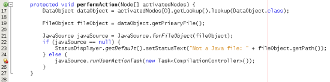

Apache NetBeans
Apache NetBeansLatest release
NetBeans Java 语言基础结构教程
| This tutorial needs a review. You can open a JIRA issue, or edit it in GitHub following these contribution guidelines. |
本教程将向您介绍 "Retouche" API 的各个方面，通过此 API 可以访问 NetBeans Java 编辑器。
由 NetBeans 中文社区的 日月雨林 翻译（2009年 8 月）
| 这份文档介绍的是基于 NetBeans IDE 6.5 . 如果你使用的是更早的版本, 请看 Netbeans 6.0/6.1 版本的文档. |
（可选）要解决疑难问题，可以 下载完整的样例 并查看源代码。
Java 语言基础结构简介
在 NetBeans IDE 6.0 之前，支持 Java 编辑器的 Java 语言基础结构（包括 Java 代码生成和 Java 重构）基于一种名为 "JMI for Java"（也称为 "MDR"）的技术。JMI for Java 存在几个体系结构问题，例如单读锁。也就是说，即使仅从其模型中读取信息也必须获取锁，而这通常只有在执行写操作时才是必需的。经过几年的时间，JMI 在性能方面经过了调试并获得了改进。但另一个问题是它使用自己的 Java 解析器内部副本，这意味着它通过自己的方法来解释 Java 源代码，此方法不同于 JDK 的 Java 编译器所使用的方法。随着 JDK 5 中泛型的引入（引入了许多更复杂、更微妙的 Java 结构），这种差异变得更难以管理。因此，由于 JMI 的性能问题，并且由于开发了正式的语言模型而使 JDK Java 编译器变成了一个可通过编程来访问的工具，JMI for Java 被一种基于 JDK Java 编译器的新方法所取代。
Retouche（法语中的一个词，表示“润色”）就是在这个时候诞生的。Retouche 是 NetBeans IDE 中新型快速的 Java 语言基础结构，能够支持已在 NetBeans 6.0 中实现的所有出色的 Java 编辑器功能。在其核心位置，Retouche 包装了 JDK Java 编译器的一个实例并使用它的工件，例如，抽象语法树（也称为 "AST"）以及在解析的各个阶段发布的符号分辨率。使用 Retouche 时，需要处理其中一些工件。例如， Compiler Tree API（编译器树 API）就是其中一个工件。编译器树 API 中类的包命名为 com.sun. 。因此，从技术上讲，这是一个非 JDK API，但它确实来自 JDK Java 编译器。对于 JDK Java 编译器的工件，您可以处理的与 Retouche 有关的另一个示例是 JDK API 中的正式语言模型，它由 javax.language.model. 包提供。
设置模块
在本节中，我们使用向导来创建一个模块项目并设置与相关 NetBeans 模块的依赖关系。
-
选择“文件”>“新建项目”。在“新建项目”向导中的“类别”下选择“NetBeans 模块”，在“项目”下选择“模块项目”，然后单击“下一步”。
-
在“项目名称”中键入
CopyFQN，将“项目位置”设置为硬盘上的相应文件夹。选择“独立模块”和“设置为主项目”（如果未选择这两个选项）。单击“下一步”。
-
在“代码名称基”中键入
org.netbeans.modules.copyfqn，在“模块显示名称”中键入CopyFQN。单击“完成”。
-
右键单击项目，选择“属性”，单击“项目属性”对话框中的“库”，然后声明与以下 API 的依赖关系：
-
数据系统 API
-
编辑器库 2
-
文件系统 API
-
Javac API 包装器
-
Java 源代码
-
节点 API
-
文本 API
-
UI 实用工具 API
-
实用程序 API
-
窗口系统 API
-
现在应该看到下面的内容：

单击“确定”。
创建上下文相关的工具栏按钮
在本节中，我们在工具栏中创建一个上下文相关按钮。这与新的 Retouche API 没有任何关系，但为我们提供了一个用户界面元素，用于与本教程后面实现的 Retouche API 进行交互。
-
右键单击模块项目，选择“新建”>“其他”，并从“模块开发”类别中选择“操作”。单击“下一步”。
1.
选择“有条件地启用”并保留所有缺省设置（如下所示），以便此操作将与 DataObject 相关，并且仅在选定了一个 DataObject 时才启用。

单击“下一步”。
-
在“类别”中选择“编辑”，在“工具栏”中也选择“编辑”。
您现在应该看到下面的内容：

单击“下一步”。
-
在“类名”中键入
CopyFQNAction，在“显示名称”中键入CopyFQN。
-
浏览到将显示在此工具栏按钮中的图标。例如，使用将在本教程中使用的图标：
单击“完成”。
您现在应该在新的 CopyFQNAction.java 类中看到以下代码：
public final class CopyFQNAction extends CookieAction {
protected void performAction(Node[] activatedNodes) {
DataObject dataObject = activatedNodes[0].getLookup().lookup(org.openide.loaders.DataObject.class);
// TODO use dataObject
}
protected int mode() {
return CookieAction.MODE_EXACTLY_ONE;
}
public String getName() {
return NbBundle.getMessage(CopyFQNAction.class, "CTL_CopyFQNAction");
}
protected Class[] cookieClasses() {
return new Class[] {
DataObject.class
};
}
protected String iconResource() {
return "org/netbeans/modules/copyfqn/icon.png";
}
public HelpCtx getHelpCtx() {
return HelpCtx.DEFAULT_HELP;
}
protected boolean asynchronous() {
return false;
}
}
们在本教程其余部分执行的所有工作将集中于上面的 performAction() 方法。
|
现在您已创建一个与数据对象相关的操作。下面我们来看一看它的正确含义。
-
右键单击模块并选择“安装”。
安装此模块后，您应该在工具栏中看到一个新按钮。
-
在“项目”窗口中选择一个节点，然后在工具栏中查看此按钮。如果选择一个表示文件或文件夹（包括包）的节点，此按钮将启用，如下所示：

但是，如果选择一个表示项目的节点，此按钮将被禁用，如下所示：

在下一节，我们不仅将区分项目节点和文件/文件夹节点，还将区分 Java 类的文件节点和其他所有类型的文件节点。
识别 Java 源文件
在本节中，我们开始使用一个新的 "Retouche" API，此 API 称作 Java Source. 在此，我们使用 JavaSource class, 类，它表示一个 Java 源文件。我们为与数据对象关联的文件对象返回此类的一个实例。如果返回 null，则说明此文件对象不是 Java 源文件。在选定某个文件的情况下单击此按钮时，将在状态栏中显示结果。
-
通过添加下面高亮显示的行来填写
performAction()方法：
protected void performAction(Node[] activatedNodes) {
DataObject dataObject = activatedNodes[0].getLookup().lookup(org.openide.loaders.DataObject.class);
// TODO use dataObject
*FileObject fileObject = dataObject.getPrimaryFile();
link:https://bits.netbeans.org/dev/javadoc/org-netbeans-modules-java-source/org/netbeans/api/java/source/JavaSource.html[JavaSource] javaSource = link:https://bits.netbeans.org/dev/javadocorg-netbeans-modules-java-source/org/netbeans/api/java/source/JavaSource.html#forFileObject(org.openide.filesystems.FileObject)[JavaSource.forFileObject(fileObject)];
if (javaSource == null) {
StatusDisplayer.getDefault().setStatusText("Not a Java file: " + fileObject.getPath());
} else {
StatusDisplayer.getDefault().setStatusText("Hurray! A Java file: " + fileObject.getPath());
}*
}-
检查 import 语句是否如下所示：
import org.netbeans.api.java.source.JavaSource;
import org.openide.awt.StatusDisplayer;
import org.openide.filesystems.FileObject;
import org.openide.loaders.DataObject;
import org.openide.nodes.Node;
import org.openide.util.HelpCtx;
import org.openide.util.NbBundle;
import org.openide.util.actions.CookieAction;-
再次安装此模块。
1. 选择一个文件节点并按此按钮。
请注意，只有选择了 Java 文件时，才会显示 "Hurray!" 消息，如下所示：

另一种方法是_仅当选定了 Java 文件时才启用此按钮_。要实现此功能，请重写 CookieAction.enable() 方法，如下所示：
@Override
protected boolean enable(Node[] activatedNodes) {
if (super.enable(activatedNodes)) {
DataObject dataObject = activatedNodes[0].getLookup().lookup(org.openide.loaders.DataObject.class);
FileObject fileObject = dataObject.getPrimaryFile();
JavaSource javaSource = JavaSource.forFileObject(fileObject);
if (javaSource == null) {
return false;
}
return true;
}
return false;
}T上面的方法过滤掉了_非_ Java 文件的所有文件。因此，只有在当前文件是 Java 文件时，此按钮才启用。
确定打开状态
在本节中，我们将开始第一个显式调用的 "Retouche" 任务。此类任务是由 JavaSource 类的 runUserActionTask 方法提供的。使用此类任务可以控制解析过程的各个阶段，当您要立即响应用户的输入时，解析过程才适用。在此任务内执行的所有工作作为一个单元完成。在本例中，我们希望在调用自己的操作（由工具栏中的一个按钮表示）后，立即在状态栏中显示相应的文本。
-
将
performAction()方法中的 "Hurray!" 消息替换为下面的代码： javaSource.runUserActionTask
(new link:http://bits.netbeans.org/dev/javadoc/org-netbeans-modules-java-source/org/netbeans/api/java/source/Task.html[Task]< link:https://bits.netbeans.org/dev/javadoc/org-netbeans-modules-java-source/org/netbeans/api/java/source/CompilationController.html[CompilationController]>());您现在应该在编辑器的左边栏中看到一个灯泡，如下所示：

-
单击此灯泡。或者，在该行中放入插入记号，再按 Alt-Enter 组合键。然后让 IDE 实现此方法。
-
稍微调整一下此方法，方法是：在方法的末尾添加一个
true布尔值，并让 IDE 将此代码片段包装在一个 try/catch 块中。最后，结果应如下所示：
protected void performAction(Node[] activatedNodes) {
DataObject dataObject = activatedNodes[0].getLookup().lookup(org.openide.loaders.DataObject.class);
// TODO use dataObject
FileObject fileObject = dataObject.getPrimaryFile();
JavaSource javaSource = JavaSource.forFileObject(fileObject);
if (javaSource == null) {
StatusDisplayer.getDefault().setStatusText("Not a Java file: " + fileObject.getPath());
} else {
*try {
javaSource.runUserActionTask(new Task<CompilationController>() {
public void run(CompilationController arg0) throws Exception {
throw new UnsupportedOperationException("Not supported yet.");
}
}, true);
} catch (IOException ex) {
Exceptions.printStackTrace(ex);
}*
}
}-
如下所示实现
run()方法：
public void run(CompilationController compilationController) throws Exception {
link:https://bits.netbeans.org/dev/javadoc/org-netbeans-modules-java-source/org/netbeans/api/java/source/CompilationController.html#toPhase(org.netbeans.api.java.source.JavaSource.Phase)[compilationController.toPhase(Phase.ELEMENTS_RESOLVED)];
link:https://docs.oracle.com/javase/1.5.0/docs/api/javax/swing/text/Document.html[Document] document = link:https://bits.netbeans.org/dev/javadoc/org-netbeans-modules-java-source/org/netbeans/api/java/source/CompilationController.html#getDocument()[compilationController.getDocument()];
if (document != null) {
StatusDisplayer.getDefault().setStatusText("Hurray, the Java file is open!");
} else {
StatusDisplayer.getDefault().setStatusText("The Java file is closed!");
}
}-
确保 import 语句如下所示：
import java.io.IOException;
import javax.swing.text.Document;
import org.netbeans.api.java.source.CompilationController;
import org.netbeans.api.java.source.JavaSource;
import org.netbeans.api.java.source.JavaSource.Phase;
import org.netbeans.api.java.source.Task;
import org.openide.awt.StatusDisplayer;
import org.openide.filesystems.FileObject;
import org.openide.loaders.DataObject;
import org.openide.nodes.Node;
import org.openide.util.Exceptions;
import org.openide.util.HelpCtx;
import org.openide.util.NbBundle;
import org.openide.util.actions.CookieAction;-
再次安装此模块。
-
选择一个文件节点并按此按钮。
请注意，只有选择了在 Java 编辑器中处于打开状态的 Java 文件时，才会显示 "Hurray!" 消息，如下所示：

检测插入记号下的元素
至此我们已经了解到要处理 Java 文件并且文件处于打开状态，在本节中，可以随时开始检测插入记号下的元素的类型。
-
首先声明与 I/O API 的依赖关系，这样就可以将结果显示在“输出”窗口中。
-
将
run()方法中的 "Hurray!" 消息替换为下面高亮显示的代码：
public void run(CompilationController compilationController) throws Exception {
compilationController.toPhase(Phase.ELEMENTS_RESOLVED);
Document document = compilationController.getDocument();
if (document != null) {
*new MemberVisitor(compilationController).scan(compilationController.getCompilationUnit(), null);*
} else {
StatusDisplayer.getDefault().setStatusText("The Java file is closed!");
}
}-
以下是
MemberVisitor类，将其定义为CopyFQNAction类的内部类：
private static class MemberVisitor extends TreePathScanner<Void, Void> {
private CompilationInfo info;
public MemberVisitor(CompilationInfo info) {
this.info = info;
}
@Override
public Void visitClass(ClassTree t, Void v) {
Element el = info.getTrees().getElement(getCurrentPath());
if (el == null) {
StatusDisplayer.getDefault().setStatusText("Cannot resolve class!");
} else {
TypeElement te = (TypeElement) el;
List enclosedElements = te.getEnclosedElements();
InputOutput io = IOProvider.getDefault().getIO("Analysis of "
+ info.getFileObject().getName(), true);
for (int i = 0; i < enclosedElements.size(); i++) {
Element enclosedElement = (Element) enclosedElements.get(i);
if (enclosedElement.getKind() == ElementKind.CONSTRUCTOR) {
io.getOut().println("Constructor: "
+ enclosedElement.getSimpleName());
} else if (enclosedElement.getKind() == ElementKind.METHOD) {
io.getOut().println("Method: "
+ enclosedElement.getSimpleName());
} else if (enclosedElement.getKind() == ElementKind.FIELD) {
io.getOut().println("Field: "
+ enclosedElement.getSimpleName());
} else {
io.getOut().println("Other: "
+ enclosedElement.getSimpleName());
}
}
io.getOut().close();
}
return null;
}
}-
再次安装此模块，并打开一个 Java 类。然后单击此按钮，并注意构造函数、方法以及字段已写入“输出”窗口中，如下所示：

-
接下来，不在“输出”窗口中显示所有元素，而仅显示插入记号下的元素。只需将
visitClass方法替换为下面高亮显示的代码：
private static class MemberVisitor extends TreePathScanner<Void, Void> {
private CompilationInfo info;
public MemberVisitor(CompilationInfo info) {
this.info = info;
}
*@Override
public Void visitClass(ClassTree t, Void v) {
try {
JTextComponent editor = EditorRegistry.lastFocusedComponent();
if (editor.getDocument() == info.getDocument()) {
int dot = editor.getCaret().getDot();
TreePath tp = info.getTreeUtilities().pathFor(dot);
Element el = info.getTrees().getElement(tp);
if (el == null) {
StatusDisplayer.getDefault().setStatusText("Cannot resolve class!");
} else {
InputOutput io = IOProvider.getDefault().getIO("Analysis of "
+ info.getFileObject().getName(), true);
if (el.getKind() == ElementKind.CONSTRUCTOR) {
io.getOut().println("Hurray, this is a constructor: "
+ el.getSimpleName());
} else if (el.getKind() == ElementKind.METHOD) {
io.getOut().println("Hurray, this is a method: "
+ el.getSimpleName());
} else if (el.getKind() == ElementKind.FIELD) {
io.getOut().println("Hurray, this is a field: "
+ el.getSimpleName());
} else {
io.getOut().println("Hurray, this is something else: "
+ el.getSimpleName());
}
io.getOut().close();
}
}
} catch (IOException ex) {
Exceptions.printStackTrace(ex);
}
return null;
}*
}-
安装此模块。
-
将插入记号放在 Java 代码中的某处，然后按此按钮。“输出”窗口显示有关插入记号下的代码的信息（如果适用）。例如，如果将插入记号放入某个方法中后按此按钮，“输出”窗口将通知您插入记号位于方法中，如下所示：

-
B但是，除了检测到插入记号下的元素的名称外，还可以检测到其他许多信息。在
visitClass方法中，替换下面以粗体显示的代码行：
@Override
public Void visitClass(ClassTree t, Void v) {
try {
JTextComponent editor = EditorRegistry.lastFocusedComponent();
if (editor.getDocument() == info.getDocument()) {
int dot = editor.getCaret().getDot();
TreePath tp = info.getTreeUtilities().pathFor(dot);
Element el = info.getTrees().getElement(tp);
if (el == null) {
StatusDisplayer.getDefault().setStatusText("Cannot resolve class!");
} else {
InputOutput io = IOProvider.getDefault().getIO("Analysis of "
+ info.getFileObject().getName(), true);
*String te = null;
if (el.getKind() == ElementKind.CONSTRUCTOR) {
te = ((TypeElement) ((ExecutableElement) el).getEnclosingElement()).getQualifiedName().toString();
io.getOut().println("Hurray, this is a constructor's qualified name: " + te);
} else if (el.getKind() == ElementKind.METHOD) {
te = ((ExecutableElement) el).getReturnType().toString();
io.getOut().println("Hurray, this is a method's return type: " + te);
} else if (el.getKind() == ElementKind.FIELD) {
te = ((VariableElement) el).asType().toString();
io.getOut().println("Hurray, this is a field's type: " + te);
}* else {
io.getOut().println("Hurray, this is something else: "
+ el.getSimpleName());
}
io.getOut().close();
}
}
} catch (IOException ex) {
Exceptions.printStackTrace(ex);
}
return null;
}-
再次安装此模块。这一次，如果您在插入记号位于某个构造函数、方法或字段上时单击此按钮，将在“输出”窗口中显示有关此元素的更多详细信息。
在此阶段，我们能够检测到是否正在处理 Java 文件、文档是否已打开以及插入记号下的元素的类型。但是，我们可以根据这些信息执行什么操作？在下一节，将介绍一个简单的方案，在此方案中，可以证明我们新获得的知识是非常有用的。
执行一些有用的操作
在本节，我们基于插入记号下的元素设置 java.awt.datatransfer.Clipboard 提供的剪贴板的内容。当您按此按钮时，插入记号下的元素将放入剪贴板中，这样您就可以将这些内容粘贴到代码中的其他位置。
-
首先声明剪贴板并定义一个构造函数：
private Clipboard clipboard;
public CopyFQNAction() {
clipboard = Lookup.getDefault().lookup(ExClipboard.class);
if (clipboard == null) {
clipboard = Toolkit.getDefaultToolkit().getSystemClipboard();
}
}-
接下来，将代码中的每个 "Hurray!" 行替换为这样一行代码，该代码行将此元素作为一个字符串发送到将在下一步定义的方法。我们将此方法称为
setClipboardContents。因此，将第一个 "Hurray!" 行替换为下面的代码行：
setClipboardContents(te);行执行同样的操作，并确保向此方法传递正确的字符串。
*提示：*因为您尚未定义 setClipboardContents 方法，所以在此步骤中添加的每一行都带有红色的下划线。在下一步中添加新方法。
-
最后，将以下代码添加到类的末尾。此方法接收字符串并将它放入剪贴板中：
private void setClipboardContents(String content) {
if (clipboard != null) {
if (content == null) {
StatusDisplayer.getDefault().setStatusText("");
clipboard.setContents(null, null);
} else {
StatusDisplayer.getDefault().setStatusText("Clipboard: " + content);
clipboard.setContents(new StringSelection(content), null);
}
}
}另请参见
有关创建和开发 NetBeans 模块的详细信息，请参见以下资源：